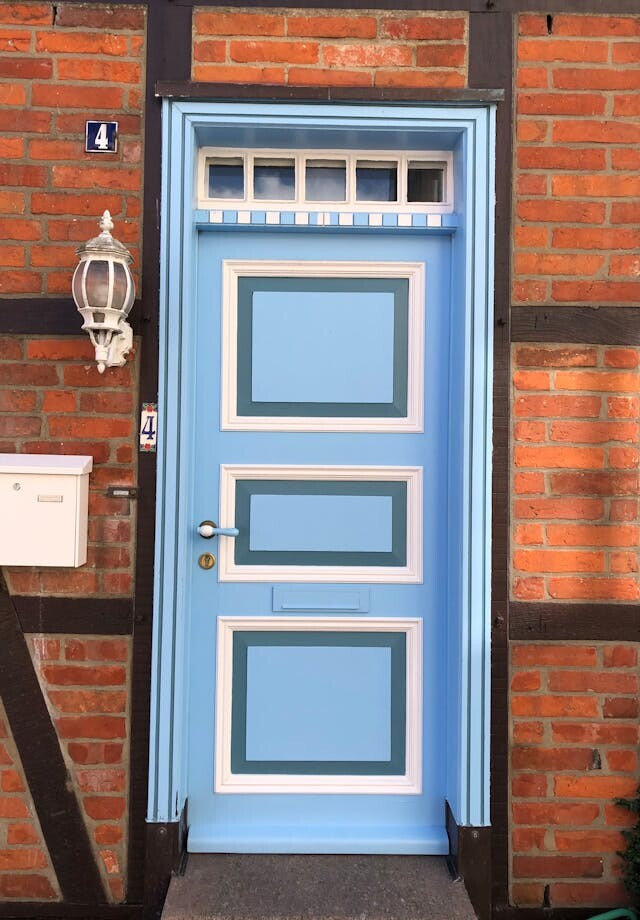

社会心理学
1966年、カリフォルニアの住宅街で行われた電話実験は、私たちが「自分の意思で選んでいる」と信じている行動の多くが、実はほんの数日前の些細な承諾に支配されていることを暴いた。
フリードマンとフレイザーがスタンフォード大学で「段階的承諾」の効果を実験的に証明し、論文を発表。
同年、米国最高裁がミランダ権を確立。イングランドがW杯で初優勝。中国で文化大革命が始まる。
この記事について: フット・イン・ザ・ドア（FITD）は社会心理学で最も広く研究された承諾誘導技法のひとつである。原著論文の発表以来、100本を超える追試研究とメタ分析が実施されている。
コンビニのレジで「ポイントカードはお持ちですか」と聞かれ、持っていると答えた。次に「アプリはダウンロードされていますか」と聞かれ、まだだと答えると、「今なら100ポイントもらえますよ」と言われる。気づけばスマホにアプリが入っている。
友人に「ちょっと相談に乗って」と言われて電話に出た。15分後、あなたは来週末の引っ越しを手伝う約束をしている。最初に頼まれたのは、たった5分の「相談」だったはずだ。
小さな承諾は、次の承諾の下地をつくる。そしてそのメカニズムは、あなたが「自分で決めた」と感じているまさにその瞬間に作動している。
この記事では、あなた自身の「承諾パターン」を段階的に体験しながら、なぜ人は一度小さな頼みに応じると次の大きな頼みを断れなくなるのかを探る。
1966年の夏、カリフォルニアの住宅街に一本の電話がかかった。声の主は「カリフォルニア消費者グループ」を名乗り、台所で使っている洗剤について8つほど質問してよいかと尋ねた。たいした質問ではない。何を使っているか、どれくらいの頻度で買うか。ほとんどの主婦が快く応じた。
3日後、別の人物が同じ家に電話をかけた。今度の依頼は桁違いだ。5〜6人の調査員を家に上げて2時間ほどかけて台所の棚を隅々まで調べさせてほしい、という。見知らぬ人間を家に入れ、私生活を覗かれる。普通なら断る。
Freedman & Fraser（1966）実験1の結果を概念図として再構成。承諾率の数値は原著論文に基づく。
だが、先に洗剤の質問に答えた主婦のうち52%がこの無茶な依頼を受け入れた。いきなり大きな依頼だけを受けた主婦の承諾率は22%。2倍以上の差が出た。事前に小さな質問に答えただけで、人は「まあいいか」と思うようになった。
ジョナサン・フリードマン
Jonathan L. Freedman — スタンフォード大学
スコット・フレイザーとともにフット・イン・ザ・ドア技法を実験的に証明した社会心理学者。人はなぜ圧力がなくても従うのかという問いを、2つの実験で検証した。
フリードマンとフレイザーは続けて第2の実験を行った。今度は、住民に小さなステッカーを車の窓か家の窓に貼ってもらう。「安全運転を」あるいは「カリフォルニアを美しく」という内容だ。数日後、別の人物が訪ねてきて、庭に巨大で見栄えの悪い看板——「安全運転を」と書かれた大判の板——を立てさせてほしいと頼む。

小さな頼みごとは、まずドアの前で交わされる。その場で交わされた「はい」が、数日後の大きな頼みごとへの扉を開ける。
驚くべき結果がもう一つある。事前の小さな依頼と大きな依頼のテーマが違っていても効果があったということだ。「カリフォルニアを美しく」という小さな請願書に署名した人が、数日後に「安全運転」の巨大看板を庭に立てることに同意した。テーマの一貫性すら必要なかった。変わったのは依頼の内容ではなく、「依頼に応じる人間」という自己像だった。
✗ よくある誤解
フット・イン・ザ・ドアは「押し売り」のテクニックで、意識していれば防げる。
✓ 実際は
効果は自分が「自発的に選んだ」と感じているときに最も強く働く。意識するだけでは防げないことが複数の研究で示されている。
✗ よくある誤解
最初の依頼と次の依頼は同じ種類でないと効かない。
✓ 実際は
フリードマンとフレイザーの実験2では、テーマの異なる依頼でも効果が確認された。変わるのは「行動する人間」という自己認識のほうだ。
✗ よくある誤解
素朴な人だけが引っかかる。批判的思考力があれば大丈夫。
✓ 実際は
自己概念が明確な人ほど「一貫していたい」という動機が強く、むしろ効果が大きくなるとする研究もある（Burger & Guadagno, 2003）。
"How can a person be induced to do something he would rather not do?"
人にやりたくないことをやらせるには、どうすればよいのか。
— Jonathan L. Freedman & Scott C. Fraser, "Compliance Without Pressure"（1966）
ここからは、職場の先輩「タナカさん」からのメッセージに答えてもらう。依頼は7段階でエスカレートしていく。◯か✕か——答えるのはあなただ。
ルールはひとつ。一度断ったら、そこでゲーム終了。日常で断った後に「やっぱりやります」と言い直すのが難しいのと同じだ。何段階目まで承諾し続けるか、自分の感覚を確かめてほしい。
承諾メーター: 0%
この体験はフット・イン・ザ・ドア技法の段階的承諾構造を簡略化して再現したもの。実際の心理実験では依頼者と被験者の関係性や時間間隔など複数の変数が統制されている。
"Once a person has agreed to a small request, he is more likely to comply with a larger request."
一度小さな依頼に応じた人間は、より大きな依頼にも応じやすくなる。
— Freedman & Fraser, Journal of Personality and Social Psychology（1966）
フット・イン・ザ・ドアが機能する理由を、心理学者たちは複数の角度から説明してきた。最も有力なのは自己知覚理論自己知覚理論（Self-Perception Theory）
ダリル・ベムが1972年に提唱。人は自分の態度を、自分の行動を観察することで推測する——つまり「やったから好きなのだろう」と逆算する、という理論。だ。しかしそれだけでは説明しきれない部分もある。ジェリー・バーガーの1999年のレビュー論文は、少なくとも6つの心理プロセスが同時に動いている可能性を指摘した。
ベムの自己知覚理論に基づく承諾の連鎖を概念図として構成。実際のプロセスはこれより複雑で、複数の心理メカニズムが並行する。
フット・イン・ザ・ドアを動かす3つのメカニズム
人は自分の態度を、自分の行動を観察することで推測する。これがダリル・ベムの自己知覚理論だ。「質問に答えた」→「自分は協力的な人間なのだろう」→「だから次の依頼にも応じる」。態度が行動を決めるのではなく、行動が態度を決める。日常の例で言えば、SNSで一度「いいね」を押したアカウントの投稿を、なぜかその後も見続けてしまうのは、「自分が関心を持っている」という自己像が形成されるからだ。
ロバート・チャルディーニロバート・チャルディーニ（Robert B. Cialdini）
アリゾナ州立大学の社会心理学者。1984年の著書『影響力の武器』で「返報性」「一貫性」「社会的証明」「好意」「権威」「希少性」の6原則を体系化した。は、人間には自分の過去の行動と一貫した態度を取りたいという強い欲求があると指摘した。一度「はい」と言った自分を裏切ることは、「私は一貫性のない人間だ」と認めることになる。それが心理的に不快なのだ。たとえば、一度ダイエットを宣言した人が、宣言を撤回するよりも無理に続けてしまうのも、同じ力学だ。
チャルディーニはさらに、コミットメントが能動的・公開的・努力を伴うものであるほど拘束力が強くなることを示した。ステッカーを窓に自分の手で貼ったという事実、請願書に自分の名前で署名したという事実——こうした行動は「態度が曖昧だった場合に、その態度を確定させる証拠」として機能する。面白い例がある。不動産契約で、購入意思を紙に書かせる営業マンがいる。書いた瞬間、買い手の心理的コストは跳ね上がる。
この3つのメカニズムは独立に働くのではなく、互いに強め合う。小さな行動が自己像を変え（自己知覚）、変わった自己像と矛盾したくないから次の行動を取り（一貫性）、その行動がコミットメントとして自己像をさらに固定する（コミットメント）。一度回り始めた歯車は、意識しないかぎり止まらない。
赤い点はこのトピックの転換点を示す。白い点は関連する研究や出来事だ。
1966
フリードマン＆フレイザーの原著論文
スタンフォード大学で2つの実験を実施。小さな依頼→大きな依頼の段階的承諾を「フット・イン・ザ・ドア」と命名し、Journal of Personality and Social Psychology に発表。
1972
ベムの自己知覚理論
ダリル・ベムが「人は自分の行動を観察して態度を推測する」という理論を体系化。フット・イン・ザ・ドアの理論的基盤となる。
1983
最初のメタ分析
ビーマンらが15年分のFITD研究を統合分析。効果は統計的に有意だが、効果量は中程度であることが判明。
1984
チャルディーニ『影響力の武器』
フット・イン・ザ・ドアを「一貫性の原理」の実例として一般向けに紹介。社会心理学の知見がビジネスやマーケティングに本格的に応用される転機。
1999
バーガーの多重プロセスレビュー
ジェリー・バーガーが100本以上の研究を統合し、FITD効果には自己知覚・心理的リアクタンス・同調・一貫性・帰属・コミットメントの6つのプロセスが関与すると結論。
2003
自己概念の明確さとFITD
バーガー＆グアダーニョが、自己概念が明確な人ほどFITD効果が強いことを発見。「自分がどういう人間か」をはっきり知っている人ほど、一貫性の圧力に弱い。
2010年代〜
デジタル環境への応用
メールマガジン登録→購入誘導、SNSの「いいね」→シェア→購入、無料トライアル→有料プランなど、デジタルマーケティングにおけるFITDの応用が急速に拡大。
フット・イン・ザ・ドアが示しているのは、人間の意思決定が「その瞬間の合理的な判断」ではなく、過去の行動の延長線上にあるということだ。私たちは「自分で選んだ」と感じる。だが、その感覚そのものが、先行する小さな承諾によって準備されている。
これは「騙されやすい人」の話ではない。むしろ逆だ。自分を「一貫した人間」だと思っている人、自分の判断に自信がある人ほど、このメカニズムの影響を受けやすい。なぜなら、過去の自分の行動を否定することは、自己像を脅かすからだ。「あのとき間違えた」と認めることは、多くの人にとって不快だ。それよりも、過去の行動と矛盾しない新しい行動を取るほうが、心理的にずっと楽なのだ。
| テクニック | 構造 | 心理的原理 |
|---|---|---|
| フット・イン・ザ・ドア | 小さな依頼 → 大きな依頼 | 一貫性・自己知覚 |
| ドア・イン・ザ・フェイス | 巨大な依頼（拒否される）→ 本命の依頼 | 返報性・譲歩 |
| ローボール | 好条件で同意 → 条件を引き上げる | コミットメント |
では、知ったからといって防げるのか。率直に言えば、知るだけでは難しい。バイアスの知識は、バイアスの免疫にはならない。それでも、いくつかの対処法は提案されている。
一つはプレモーテムプレモーテム（Pre-mortem）
何かを決断する前に「これが失敗したとしたら、原因は何だったか」を想像する手法。ゲイリー・クラインが提唱。事前に失敗シナリオを描くことで、楽観バイアスを減らす。という手法だ。重要な決断の前に「もしこの選択が間違いだったとしたら、何が原因か」を想像する。これは万能ではないが、一貫性の圧力に気づくきっかけにはなる。
もう一つは、「最初の依頼に応じた時点の自分」と「今の自分」を切り離すこと。「あのとき承諾したから」という理由だけで今の依頼に応じる必要はない。サンクコスト錯誤サンクコスト錯誤（Sunk Cost Fallacy）
すでに投じた回収不能なコスト（時間、お金、労力）に引きずられて、合理的でない判断を続けてしまう傾向。「ここまで来たのだから」という心理。と同じ構造だ。「ここまで協力したのだから」は、次の協力を正当化する理由にはならない。
最後に、環境を変えることだ。段階的承諾は「前の承諾の記憶」が前提になる。メールマガジンの登録解除、SNSのフォロー整理、試供品を受け取らない——こうした小さな遮断が、連鎖の始点を消す。「知っているだけでは変わらない」という原則が、ここでも当てはまる。環境そのものを操作するほうが、意志の力よりも確実だ。
"Individuals come to 'know' their own attitudes, emotions, and other internal states partially by inferring them from observations of their own overt behavior."
人は自分の態度や感情、その他の内的状態を、自分自身の外的行動を観察することで部分的に推測する。
— Daryl J. Bem, "Self-Perception Theory," Advances in Experimental Social Psychology（1972）
作品への登場
ロバート・チャルディーニ『影響力の武器』（1984）
フット・イン・ザ・ドアを「一貫性の原理」の中心的な実例として一般読者に紹介した書籍。セールス、募金活動、政治運動における段階的承諾の事例を豊富に収録し、社会心理学をビジネスの言語に翻訳した。
映画『ミーン・ガールズ』（2004）
主人公ケイディがスクールカーストの「プラスチックス」に取り込まれる過程は、段階的承諾の構造そのものだ。最初は「一緒にランチを食べるだけ」。やがて服装を合わせ、行動を合わせ、最終的には自分が最も嫌っていたタイプの人間になっていく。
アナキン・スカイウォーカーの堕落（スター・ウォーズ）
アナキンがダース・ベイダーになる過程は、一度の決断ではなく、小さな規則違反の積み重ねとして描かれている。秘密の結婚、評議会への不信、パルパティーンとの私的な対話——各段階で「ここまで来たのだから」という一貫性の圧力が働いている。
Compliance Without Pressure: The Foot-in-the-Door Technique
すべてはここから始まった。洗剤の質問と庭の看板という2つの実験が、社会心理学の重要テーマを生んだ。60年近く前の論文だが、実験デザインの明快さは今読んでも学ぶところが多い。
「態度が行動を決める」のではなく「行動が態度を決める」——この逆転が、フット・イン・ザ・ドアの理論的支柱になった。認知的不協和理論との対比が読みどころ。
The Foot-in-the-Door Compliance Procedure: A Multiple-Process Analysis and Review
100本以上のFITD研究を統合し、6つの心理プロセスを特定した決定版レビュー。なぜ効く場合と効かない場合があるのかを解明しようとした論文で、この分野の全体像をつかむのに最適。
Influence: Science and Practice
社会心理学の知見を「影響力の6原則」として体系化した古典。フット・イン・ザ・ドアは「一貫性」の章で詳しく扱われている。学術論文を読む前のウォーミングアップとして、あるいはこの分野に入る最初の一冊として。